قوالب المحتوى: ناظم + VAY
ستايل مسطح: أسود صافي بخط أحمر، أو أحمر كامل بكتيبة سوداء. خط Cairo وكلمة وحدة حمراء. اضغط على صورة باش تحلها كبيرة وتسجلها.
الـ bio
@nadhem_elaashek
ناظم | حرب النفس
من الحبس للتوبة، نبني روتيني وديني قدامكم 🤍 نعاونك تنظّم صلاتك وتبني روتينك وتتحرر من الإدمان ⚔️ تحدي «حرب النفس» 21 يوم مجاني، يبدا 1 نوفمبر 👇
توّا: صفحة الكتاب. من 28 أكتوبر: رابط تيليغرام التحدي.
@vaynora_
VAYNORA | حرب النفس
VAYNORA® · عقلية ومجتمع لمن يريد التحرر من الإدمان، تطوير نفسه والعودة إلى الله 🤍 اصنع من الألم قوة ⚔️ · ابدأ من هنا 👇
صفحة الكتاب: nadhem58234848.github.io/VAYNORA/book.html
القوالب

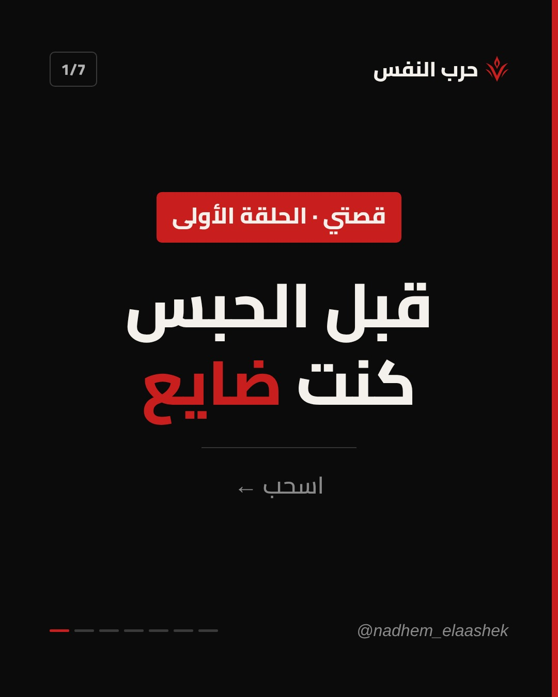

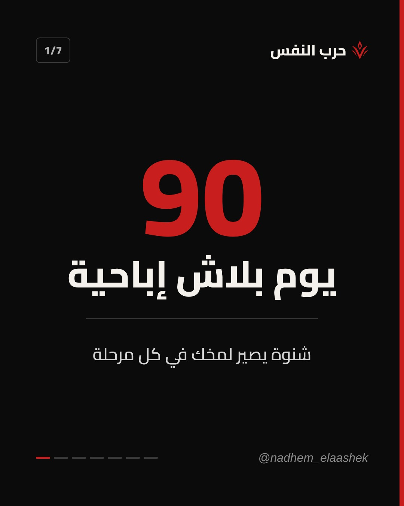

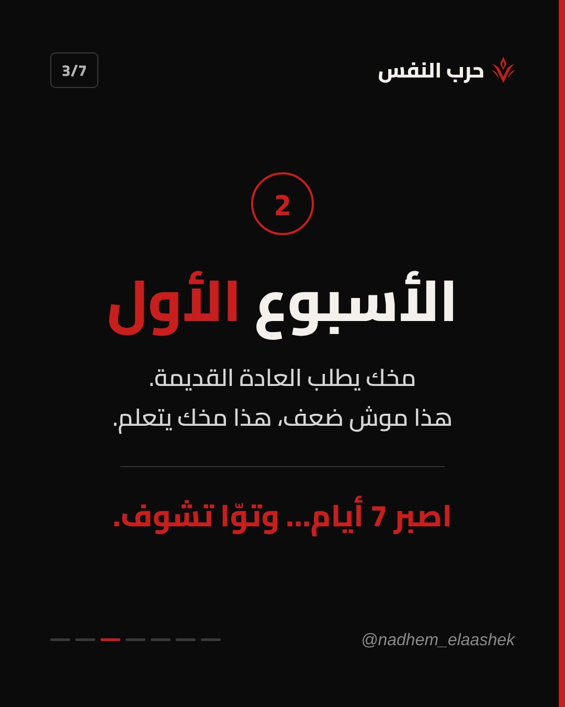

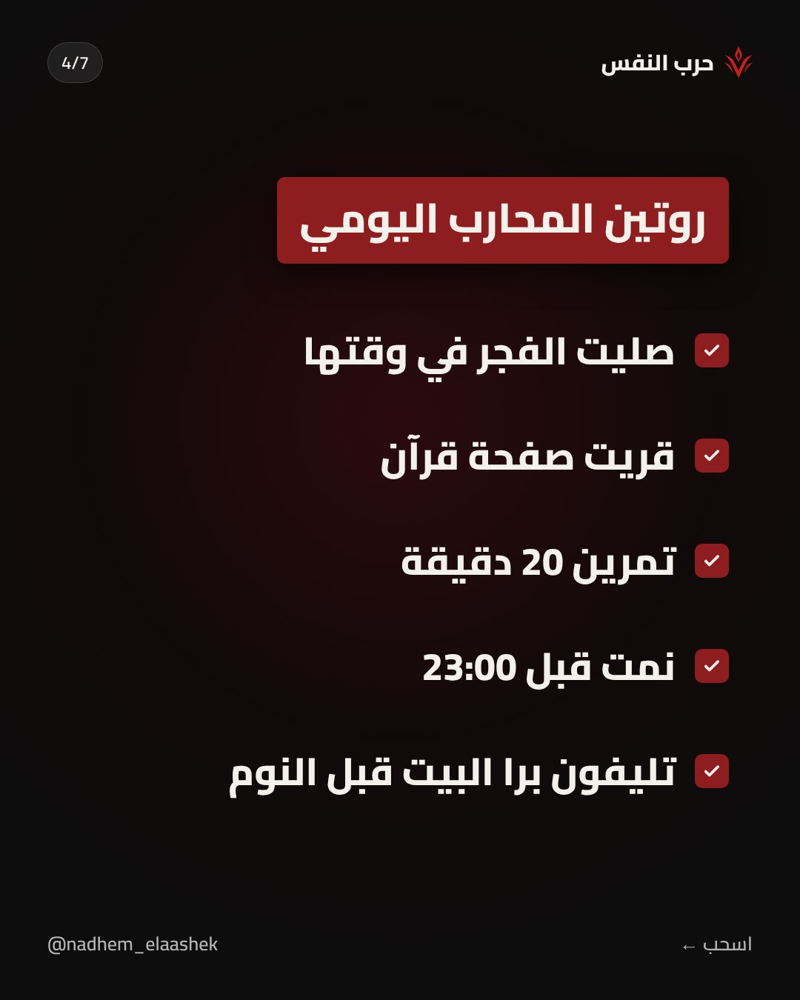

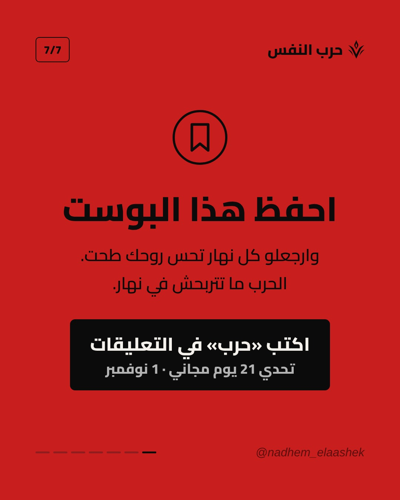

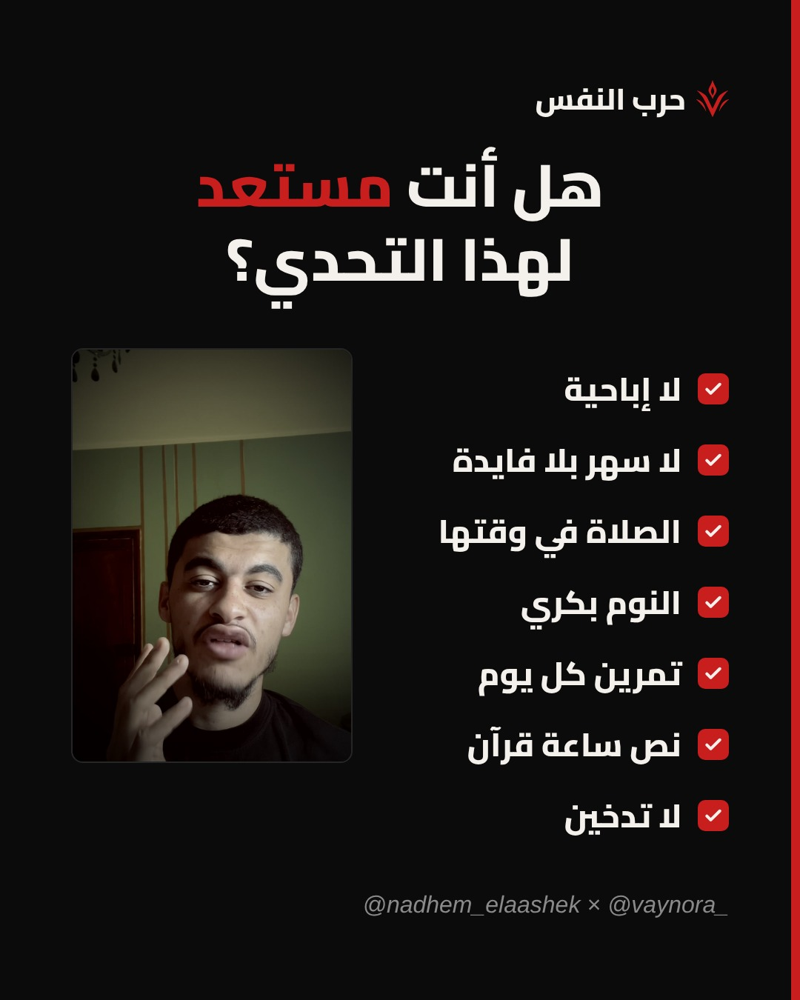

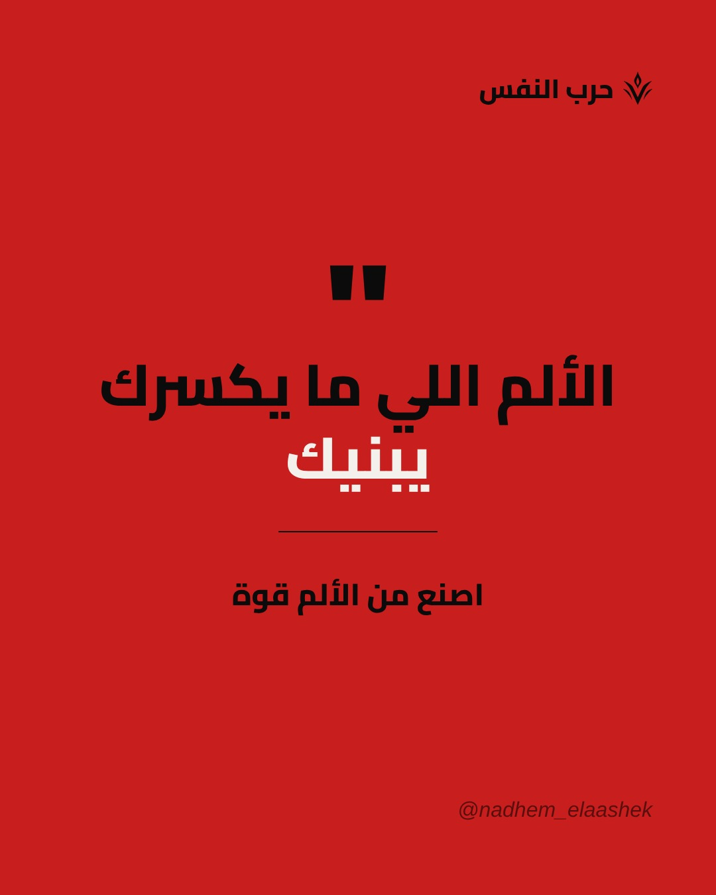

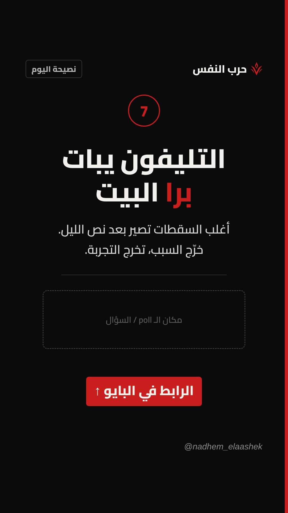

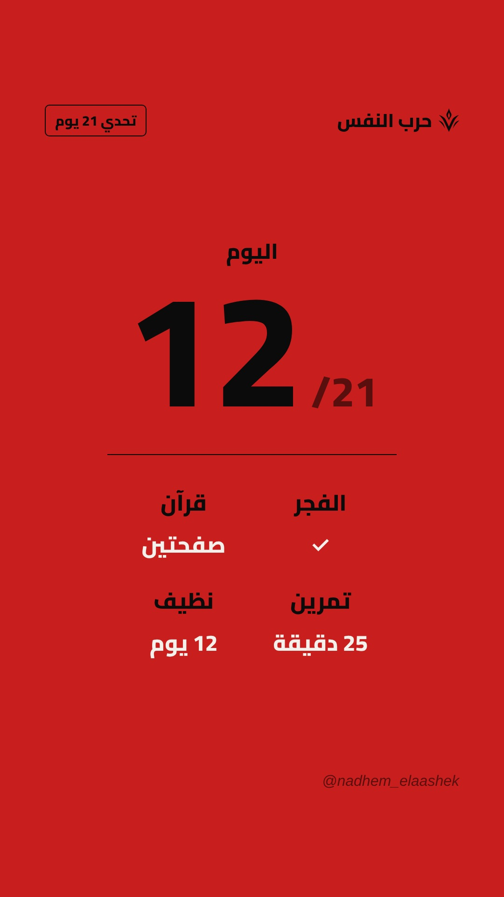

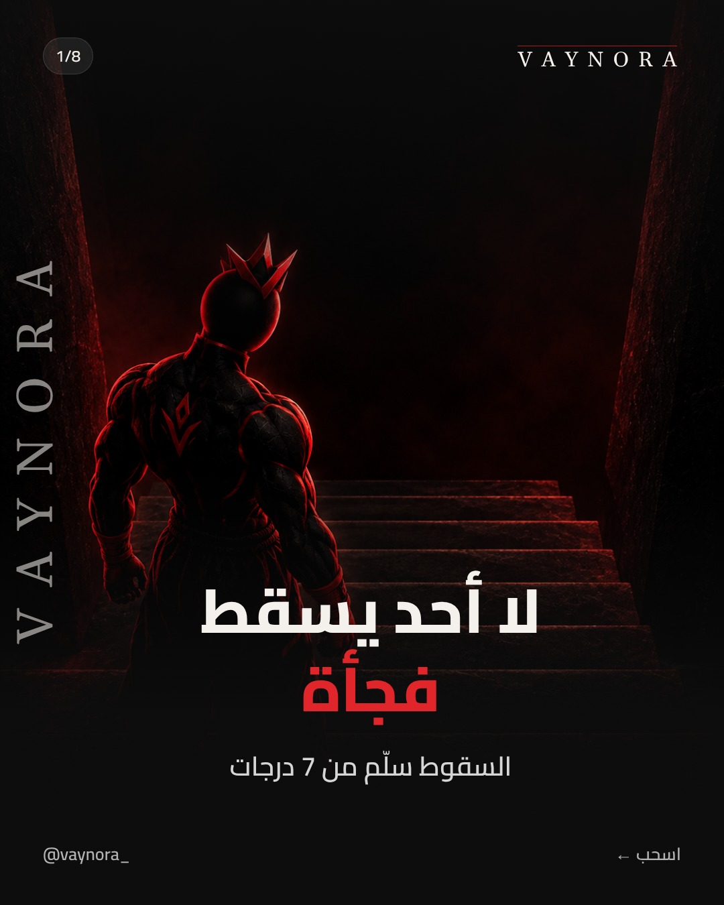

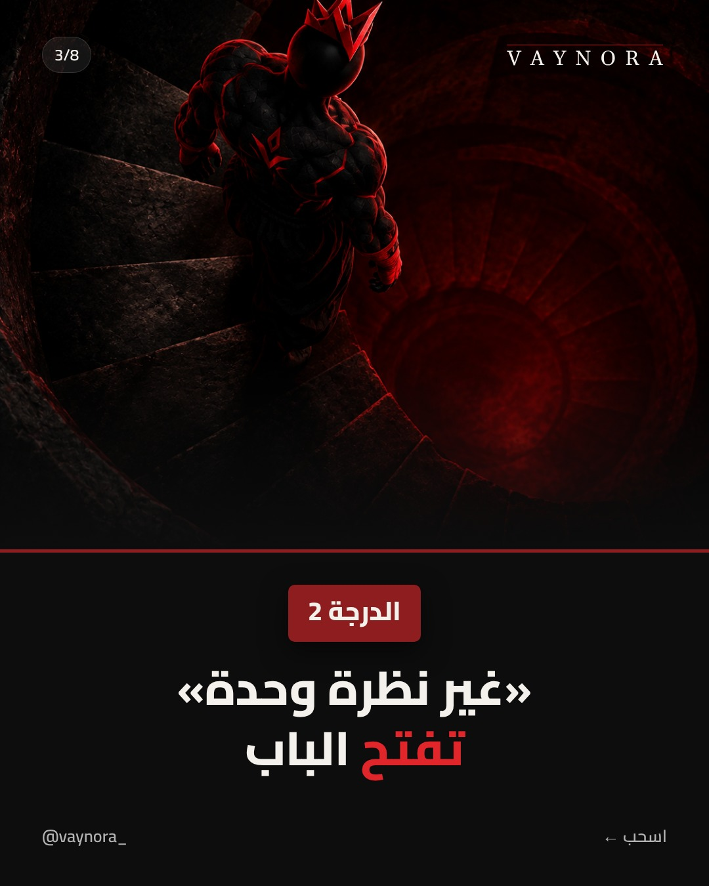

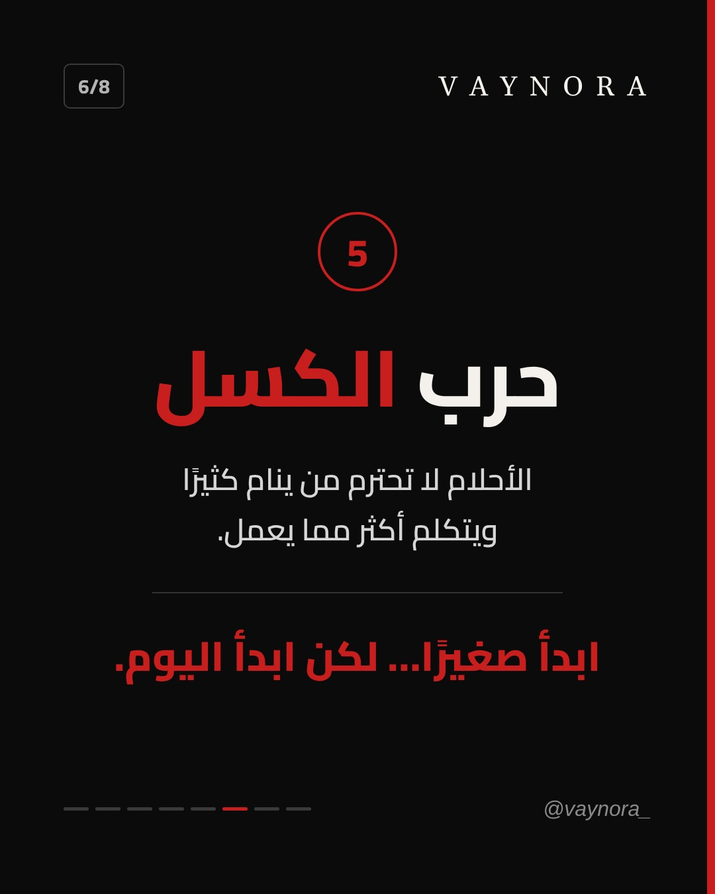

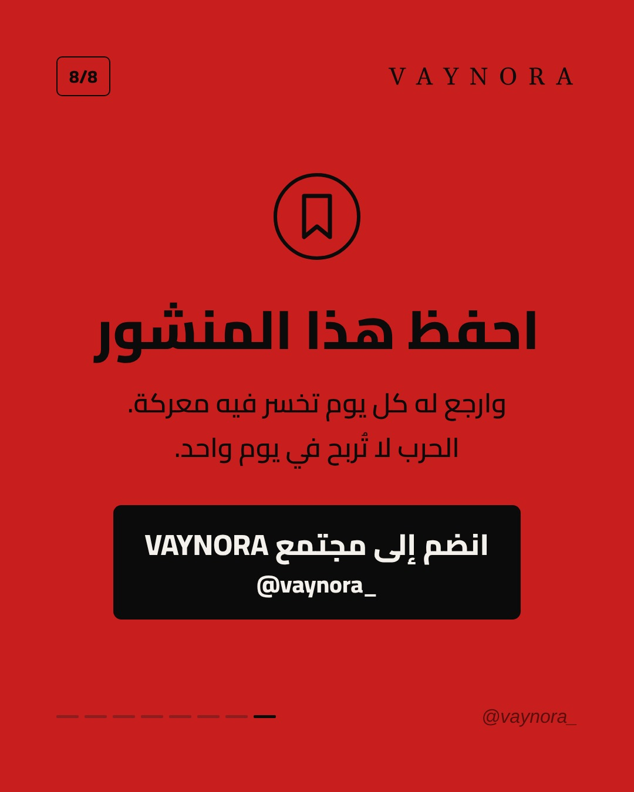
القواعد
- الخلفية مسطحة ديما: أسود صافي #0B0B0B بخط أحمر رقيق على اليمين، ولا أحمر كامل #C81E1E بكتيبة سوداء. لا تدرّج، لا صورة في الخلفية.
- كل كاروسيل: سلايدات سودا، وآخر سلايد (احفظ / CTA) أحمر كامل.
- فوق: الكونتور في مربع على اليسار، والبراند على اليمين (ناظم: الشعار + «حرب النفس»، VAY: VAYNORA بالحروف الكلاسيكية).
- تحت: الخطوط الصغار متاع التقدم على اليسار (الحالي بالأحمر)، والحساب على اليمين.
- العنوان كبير بخط Cairo، وكلمة وحدة حمراء. الرقم في دائرة حمراء، وخط رمادي يفصل الجملة الأخيرة.
- الصور (VAY ولا ناظم) تجي في كارت بزوايا مدورة، موش خلفية.
- الصور هنا أمثلة: نبدلوها بصورك وبصور VAY في كل بوست.